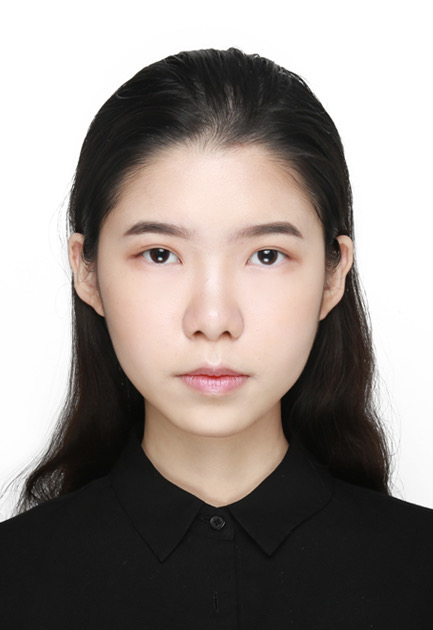
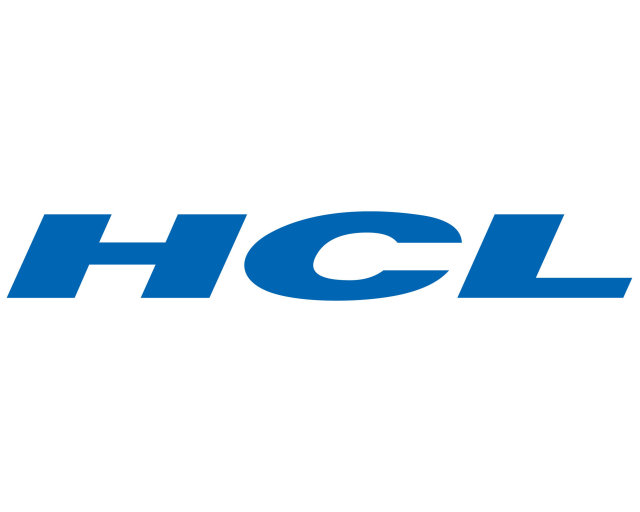

Yumeng He 何雨濛
Master's StudentUniversity of Sourthern California
heyumeng@usc.edu
Handshake
Github
Résumé
Latest Update: Apr 21, 2025
About Me
I am a Master’s student in Computer Science at the University of Southern California. Prior to USC, I earned my Honours Bachelor of Science degree with High Distinction from the University of Toronto, where I double-majored in Mathematics and Computer Science. This dual background has fostered a strong foundation in math-based problem-solving and robust coding skills.
Research Interests
My primary interest lies in computer graphics, with a special focus on collision detection. I am currently open to summer internship and research assistant opportunities that align with my passion for graphics and simulation.
Work Experience

August 2022 – August 2023
In a DevOps-focused internship, I streamlined build and deployment using Jenkins, built Docker images for both xLinux and pLinux, integrated SonarQube to resolve critical issues, and automated weekly log cleanups—significantly reducing human error and accelerating release cycles.
Projects & Publications

Spring 2025
A 3D mass-spring simulation of a jello cube, featuring structural, shear, and bend springs, collision detection, external forces, and multiple integrators (Euler, RK4, implicit).
[Code] [Project Page] [Demo Video]

Fall 2024
In this assignment, we built a ray tracer. The ray tracer is be able to handle opaque surfaces with lighting and shadows.
[Code] [Project Page]

Fall 2024
This assignment utilizes Catmull-Rom splines together with OpenGL's core profile shader-based lighting and texture mapping to simulate a roller coaster.
[Code] [Project Page] [Demo Video]

Fall 2024
This program renders a height field using OpenGL shaders, allowing interactive visualization and manipulation of terrain data derived from heightmap images. It supports various rendering modes, smooth shading, and user controls for transformation and camera adjustments.
[Code] [Project Page] [Demo Video]

Fall 2023
Led a four-person team to develop a Python-based adoption platform with Django REST Framework and MySQL—implementing advanced search filters, real-time data handling, a responsive front end (HTML/CSS/JS), and secure authentication to streamline the pet adoption process.
[Code]
Fun Facts
- In addition to my academic pursuits, I’m also a tattoo artist. Check out my work on Instagram at @rainy.tattoo.
- I built this webpage entirely from scratch without any templates; it’s a simple static site, but a great way to practice HTML and CSS.